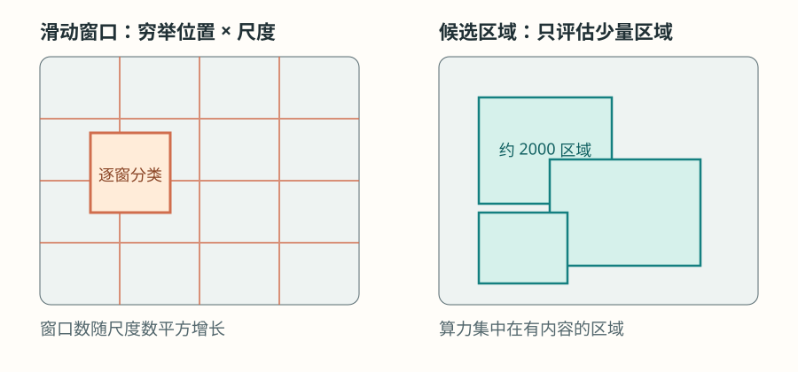
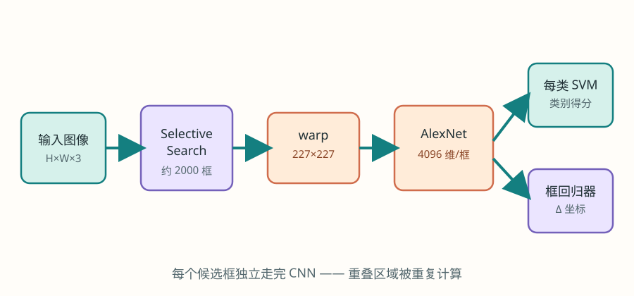
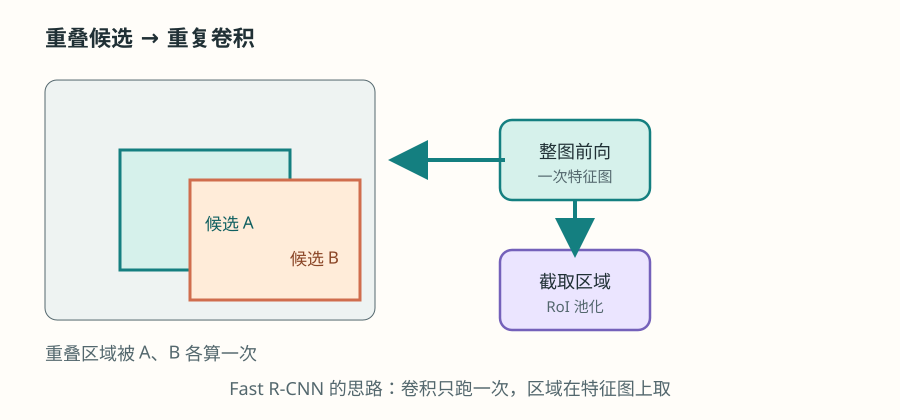

CHAPTER 16 · R-CNN
R-CNN：把 CNN 特征引入目标检测
2014 年的 R-CNN 用卷积网络特征替换了手工特征，并把检测拆成“候选区域 → 分类 → 框回归”三段，确立了两阶段检测器沿用至今的基本骨架。它的代价是一次推理要重复跑上千次卷积。
检测为什么需要“先提区域再分类”
目标检测要在一张图里找出数量不定的一组物体，并同时回答“在哪”和“是什么”。在 R-CNN 之前，主流做法是滑动窗口：在整张图上以不同位置和尺度穷举矩形窗口，对每个窗口跑一次分类器，再用非极大值抑制合并。窗口数量随尺度数呈平方增长，而当时的分类器建立在 HOG、SIFT 等手工设计特征之上，表达容量有限。
R-CNN（Regions with CNN features，2014）的核心判断很直接：既然卷积网络在 ImageNet 分类上学到了比手工特征更强的表示，那就在区域提议（region proposal）上复用这套表示，而不是在整张图上滑动。它没有发明候选区域，也没有发明分类器，而是把“候选区域 + 强特征 + 每类分类器 + 框回归”组合成一个可训练的检测系统。

需要区分的是：R-CNN 的关键词是 CNN 特征。检测框架仍是“候选区域 + 分类/回归”，真正被替换的是特征提取器。理解这一点，才能看清后续 Fast/Faster R-CNN 到底在改什么。
候选区域不必依赖训练数据
R-CNN 使用 Selective Search（Uijlings 等，2012）产生候选区域。它的流程不涉及任何类别标签：
- 先用基于图的图像分割（Felzenszwalb 算法）把图像过分割成大量小区域（superpixel）。
- 再按颜色相似度、纹理相似度、大小相似度和形状兼容性，贪心地合并相邻且相似的区域。
- 记录合并过程中每个区域的包围盒，最终输出约两千个候选框，覆盖不同位置、尺度和长宽比。
因为只用图像自身的底层信息，Selective Search 可以在任意图像上直接运行，不需要训练。代价是：候选数量是固定预算，其中大量是背景；每个候选的尺度不一，必须另行处理才能送进固定输入的 CNN。R-CNN 论文报告，在 PASCAL VOC 上用约两千个候选可以取得很高的物体覆盖率（召回）；具体百分比与评估口径应以原论文为准，本页不复述未经核对的数字。
R-CNN 的三段式流程

| 阶段 | 操作 | 输出 | 是否含学习参数 |
|---|---|---|---|
| 1. 候选区域 | Selective Search | 约两千个尺度不一的框 | 否 |
| 2. 特征提取 | 每个框 warp 到 227×227 → AlexNet | 每个框一个 4096 维向量 | 是（预训练 + 微调） |
| 3a. 分类 | 每个向量 → 每类一个 SVM | 类别得分 | 是 |
| 3b. 框回归 | 每个向量 → 每类一个回归器 | 修正后的框坐标 | 是 |
缩放（warp）。AlexNet 需要固定尺寸输入。R-CNN 不保留候选的原始长宽比，而是直接把它拉伸到 227×227。这会造成形变，但论文发现对最终精度影响有限。今天更常见的做法是 letterbox 或 RoI pooling，属于后续改进。
迁移学习。AlexNet 先在 ImageNet 分类任务（1000 类）上预训练，再在检测数据上微调。论文把“辅助任务预训练 + 领域微调”列为两个关键洞见之一：在标注稀少的检测任务上，它比从头训练显著更好。
为什么用 SVM 而不是直接用 CNN 的 softmax？论文作者报告过，作者当时用 CNN 最后一层 softmax 直接分类的效果不如 SVM。一种解释是：微调阶段的正样本定义较宽松（IoU 阈值较低），使 CNN 对位置不够敏感；而 SVM 训练时使用更严格的阈值与难负样本挖掘。这个差异后来在 Fast R-CNN 中通过统一训练策略被解决，“用全连接层直接分类”才重新成为主流。这里给出的是原论文的做法与当时的解释，不是普遍定律。
边界框回归的尺度无关参数化
候选框 P 虽然大致覆盖了物体，位置却不够精确。边界框回归器学习从 CNN 特征 φ(P) 到四个修正量的映射，把 P 推近真值框 G。关键在于：修正量不是直接预测绝对坐标，而是预测相对于候选框的偏移。
R-CNN 的回归目标：中心用候选宽高归一化，宽高用对数比；需 P_w、P_h > 0。
归一化让“平移多少像素”对大小不同的框可比；对数比让宽高缩放变成加性量。推理时反过来从候选框和预测偏移恢复坐标：
y 方向同理；d 是回归器对候选框特征给出的预测偏移。
训练时用 Smooth L1 把预测偏移拉向目标偏移，它对小误差像 L2、对大误差像 L1，因此对离群框不那么敏感：
Smooth L1：绝对误差小于 1 时用二次项，否则用线性项。
import math
def decode_box(p, d):
# p=(Px,Py,Pw,Ph) 候选框；d=(dx,dy,dw,dh) 回归器预测偏移
px, py, pw, ph = p
dx, dy, dw, dh = d
assert pw > 0 and ph > 0
return (pw*dx + px, ph*dy + py, pw*math.exp(dw), ph*math.exp(dh))
candidate = (40.0, 50.0, 160.0, 160.0)
target = (50.0, 60.0, 200.0, 200.0)
# 由真值反推训练目标 t*，验证参数化可逆
px, py, pw, ph = candidate
gx, gy, gw, gh = target
t = ((gx-px)/pw, (gy-py)/ph, math.log(gw/pw), math.log(gh/ph))
recovered = decode_box(candidate, t)
assert all(abs(a-b) < 1e-9 for a, b in zip(recovered, target))
print("decoded box:", tuple(round(v, 2) for v in recovered))瓶颈：重叠候选导致的重复卷积
R-CNN 把检测精度提上去了，但速度极慢。论文报告在 VOC 2012 上取得 53.3% mAP，相对此前最好结果提升 30% 以上（数据源：R-CNN 摘要，arXiv:1311.2524）。但推理要在这两千个候选上独立地跑一遍完整 CNN，而候选之间高度重叠。

除重复计算外，R-CNN 还有几项工程代价：多阶段训练（先微调 CNN，再提取特征训 SVM，再训回归器）；特征落盘（需把大量 4096 维向量写到磁盘供 SVM 使用）；测试慢（无法实时）。这些不是精度问题，而是训练与部署流畅度问题，也是下一代工作直接针对的目标。
历史地位与向下游的演进
R-CNN 最持久的遗产是它确立的两阶段骨架：第一阶段负责“在哪里可能有物体”，目标是高召回；第二阶段负责“它是什么、框在哪里”，目标是高精度。分工清晰，两个阶段可以分别优化。后来的 Fast R-CNN 与 Faster R-CNN 都没有推翻这个骨架，而是在消除它的具体痛点：前者用 RoI 池化共享卷积、把分类与回归并入一个网络；后者用区域提议网络（RPN）把候选生成也交给网络，端到端训练。
理解这条“接力式”演进，比孤立记住每个模型的超参更有用：每一步只解决上一代的一个明确瓶颈，而不是另起炉灶。R-CNN 证明“CNN 能做检测”的当时争议性观点，因此可以被看作检测进入深度学习时代的起点。
检查理解：R-CNN 把候选区域缩放到 227×227 后送 CNN，这会对哪些目标不利？
强制拉伸会破坏长宽比，对细长目标（如行人、旗杆）的形变尤其明显；同时小目标缩放后有效像素很少。后续 RoI pooling / RoIAlign 保留空间结构、避免逐框重跑卷积，部分缓解了这两个问题。
原始资料与评估口径
本页的公式为 R-CNN 论文的标准参数化；瓶颈与演进叙述依据论文正文与后续工作。指标只在能指向来源时给出。